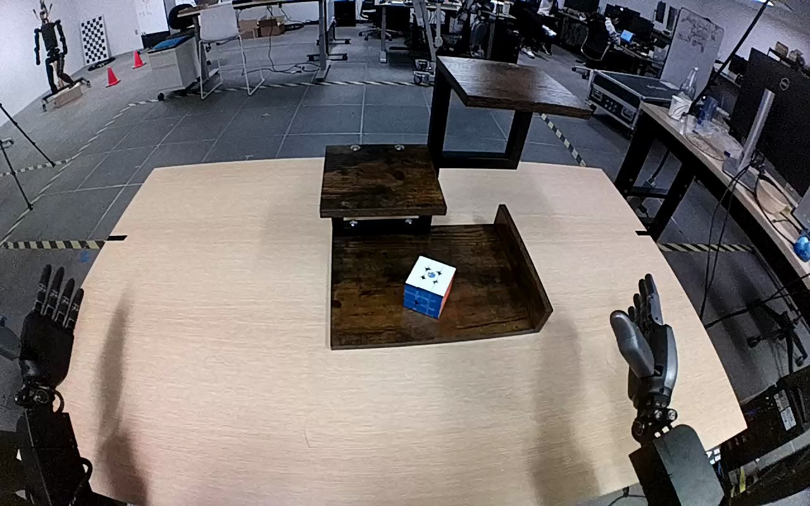

NVIDIA GR1 · 92
Video 92

Visual review action_review.json
{
"prompt_protocol": "humanoid_action_v1",
"prompt_provenance": "visually_authored_from_video_and_initial_frame",
"reviewed_contact_sheets": [
"sheet_001.jpg"
],
"inspected_frame_stride": 2,
"inspected_sampled_frame_count": 60,
"initial_scene": "Robot-centered elevated forward view of two forearms and hands facing a stepped brown wooden shelf. A white-topped, blue-fronted and red-sided cube rests on the lowest shelf; the two higher levels are empty. Both hands are initially open.",
"observed_sequence": [
{
"frame_interval": [
0,
12
],
"action": "Both hands remain open near their respective body sides; cube rests on the lowest shelf.",
"confidence": "high"
},
{
"frame_interval": [
13,
35
],
"action": "Right arm reaches inward toward the cube with the hand open and positions thumb and fingers on opposite sides. Left hand stays open and does not contact objects.",
"confidence": "high"
},
{
"frame_interval": [
36,
61
],
"action": "Right thumb and fingers close around the cube while it remains at the lower level, establishing a secure grasp.",
"confidence": "high"
},
{
"frame_interval": [
62,
89
],
"action": "Right hand lifts the cube clear and transports it upward and rearward toward the highest shelf; lowest shelf becomes empty.",
"confidence": "high"
},
{
"frame_interval": [
90,
111
],
"action": "Right hand carries the cube over the highest shelf and lowers it toward the wooden surface while retaining its grasp.",
"confidence": "high"
},
{
"frame_interval": [
112,
119
],
"action": "Cube is set upright on the highest shelf; right hand opens and begins to lift away, leaving the cube supported by the shelf.",
"confidence": "high"
}
],
"arm_hand_roles": {
"right": "Sole manipulating hand: grasps cube between thumb and fingers, lifts and transports it from lowest to highest shelf, sets it upright and releases.",
"left": "Remains open at the left body side; no contact, stabilization, transfer or support of the cube or shelf.",
"coordination": "Single-hand transfer; no bimanual coordination or person interaction."
},
"anatomical_side_evidence": "The camera looks forward and down from between the robot arms: the active forearm extends from the robot body side at lower image right, and the unused forearm from lower image left. The active hand has its thumb on the medial side toward the centerline in the initial PNG and grasp frames. This robot-centered geometry identifies the active hand as anatomical right, consistent with but not solely inferred from the source instruction.",
"evidence_frame_indices": [
0,
24,
36,
64,
70,
90,
104,
110,
114,
116,
119
],
"initial_png_inspected_native": true,
"inspection_coverage": {
"full_sequence": "Viewed all 60 every-second-frame samples from frame 0 through 118 on sheet_001.jpg.",
"native_detail_frames_viewed": [
24,
36,
64,
70,
90,
104,
110,
114,
116,
119
],
"source_initial_png": "Viewed source first_frame.png at native 1280x800 resolution."
},
"uncertainties": [],
"annotation_discrepancies": [],
"selected_execution_status": "success",
"terminal_state": "Cube stands upright on the highest shelf, with blue face toward the camera and white top upward. Right hand is open and withdrawing just above/beside it; left hand remains unused. Lowest shelf is empty.",
"video_id": "92",
"dataset": "NVIDIA_GR1_100",
"dedicated_review_agent": "review_gr1_92",
"review_source_video": "NVIDIA_GR1_100/92/original/original.mp4",
"source_frame_count": 120,
"source_fps": 20.0,
"native_detail_frames": [
24,
36,
64,
70,
90,
104,
110,
114,
116,
119
],
"world_model_prompt": "The robot grasps the cube on the lowest shelf with its right hand, closes its fingers around the sides, and lifts it clear. It carries the cube up to the highest shelf, sets it upright, and opens its hand to leave it resting there. Keep the camera fixed; preserve robot geometry, physically valid joint motion, and normal gripper opening and closing.",
"original_task_instruction": "Use the right hand to pick up rubik's cube from bottom level of brown wooden shelf to top level of brown wooden shelf.",
"selected_segment": {
"start_frame": 0,
"end_frame_exclusive": 120,
"reason": "Complete original single-task reference; no cropping or trimming requested."
},
"source_video_sha256": "e9affd3ee3a979bbb4c6a9c973a86958bc26204e14f4873e777e087b2ce41b12",
"review_completed_at": "2026-10-13T18:39:51.057455+00:00"
}